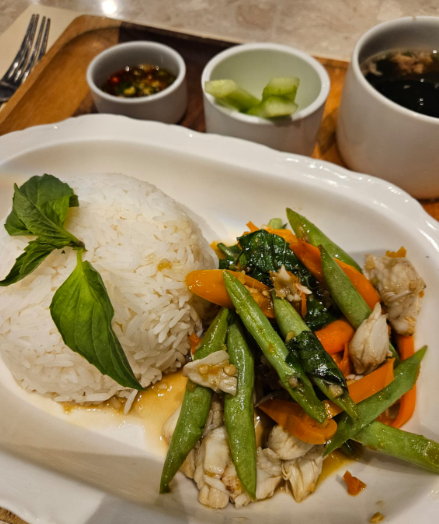

🍲 Sambal Stir-Fried Tofu and Veggies
A spicy, protein-rich stir-fry that's budget-friendly and quick to make.

 0 Likes
0 Likes
🧂 Ingredients
- 1/2 block firm tofu (cubed)
- 1/2 cup mixed vegetables (e.g., long beans, bell peppers, carrots)
- 1 tbsp sambal balacan chillie or chili paste(any brand)
- 1 tsp soy sauce
- 1 tbsp oil
- Cooked rice
👩🍳 Instructions
- Heat oil in pan and pan-fry tofu cubes until golden.
- Remove tofu from pan, put vegetables in pan and stir-fry quickly.
- Add sambal and soy sauce, mix well.
- Return tofu to pan and combine.
- Serve hot with rice.
💡 Tips
- If fresh vegetables are not available, you can use frozen veggie mix.
- Adjust sambal to taste (it's spicy!).
- Swap tofu with mushrooms or tempeh.

💬 Comments